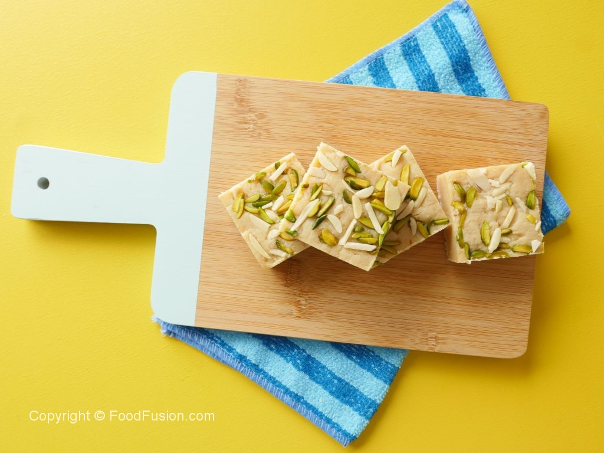

Home
Khoya Barfi

Decription
Barfi or burfi is a milk-based sweet from the Indian subcontinent with a fudge-like consistency. Its name comes from the Persian and Urdu word (barf) for snow. Barfi is consumed throughout India and Pakistan and is especially popular in North India. It is often served at celebrations and religious festivals such as Diwali and Holi
Ingrediants
- Milk fresh 1 & ½ litre
- Sugar ½ Cup or to taste
- Cardamom powder ½ tsp
- Milk ¼ Cup
- All-purpose flour ½ tbs
- Cooking oil 1 tsp
- Pistachio
- Almonds
Steps
- In pot,add fresh milk and bring it to boil and cook until milk is reduced to half and stir frequently
- Add sugar and cardamom powder,mix well and cook on medium low flame (15-20 minutes) and mix continuously.
- In milk,add all-purpose flour and mix well.
- Add dissolve flour,mix continuously and cook until thickens (approx. 18-20 minutes).
- Add cooking oil,mix well and cook for 2-3 minutes.
- In mould,add cooked khoya/mawa and spread evenly.
- In mould,add cooked khoya/mawa and spread evenly.
- Let it cool.
- Cut into desired sizes & serve.